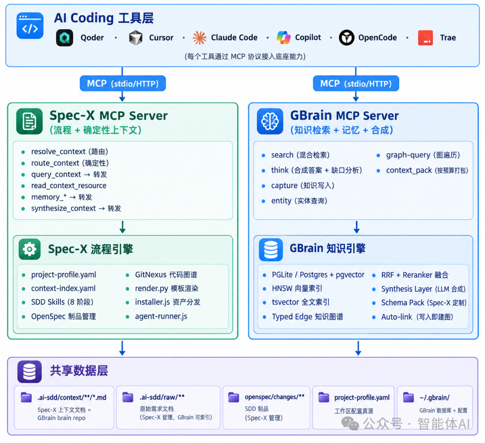
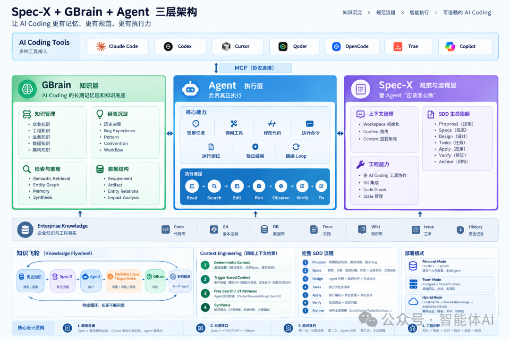
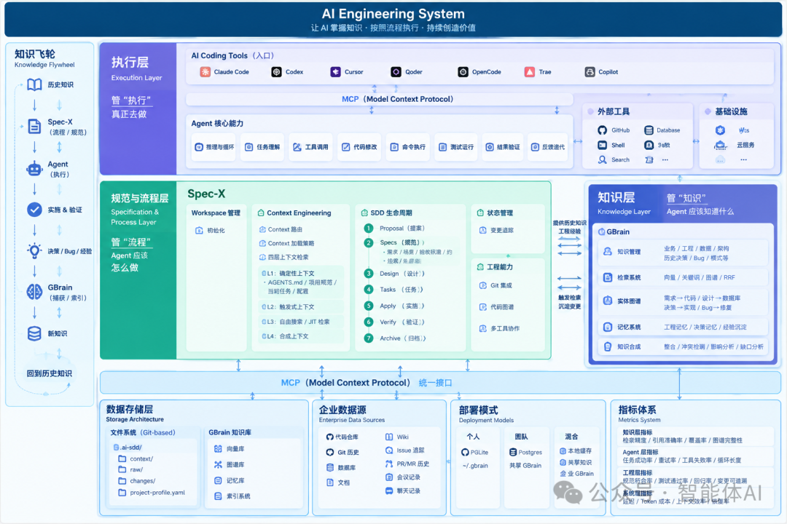

AI Coding卷到现在，真正卡脖子的东西没人提
来源：微信公众号 归档日期：2026-09-30 抓取状态：成功 原文字符：9009｜配图：3 张
摘要速览
- 模型越强项目反而越容易失控：AI Coding 卡住的不是模型层——Agent 能自读代码、自改自测，但产出常「看起来对，用起来不对」；真正下一站是把 Model、Agent、Spec-X、GBrain、Tools、MCP 串成一个真正的 AI Engineering System。
核心内容
（待补充）
可执行启发
（待补充）
我的想法
（待补充）
原文沉淀
目录
- 先说一个所有人都遇到过的场景
- Spec 是工程契约，但它只知道「怎么做」
- 我们的做法：把系统拆成三层
- 真正缺的不是更多上下文，是更准的上下文
- 从 RAG 到工程记忆，再到知识图谱
- 把这套东西放进一次真实开发里
- 边界与生态：MCP、Git，以及不做大一统
- 企业真正需要的，从来不是一个「更聪明的 Agent」
模型越强，项目反而越容易失控。AI Coding 卡住的地方，压根不在模型这一层——真正的下一站，是把 Model、Agent、Spec-X、GBrain、Tools、MCP 串成一个真正的 AI Engineering System。
最近跟几个做 AI Coding 产品的朋友探讨，聊到一个挺扎心的共识：模型确实越来越强了，Agent 也确实越来越能干了——自己读代码、自己搜文件、自己改代码、自己跑测试、报错了自己接着修，一个需求扔进去，几十分钟后真能吐出一个能跑的功能。
按理说，「软件开发要被 AI 解决了」这种论调应该越来越有底气才对。但我们几个人的实际感受恰恰相反：模型越强，项目做到中后期反而越容易失控。不是 Agent 写不出代码，是它写出来的代码经常「看起来对，用起来不对」。

这半年我一直在琢磨这个问题，越想越觉得，AI Coding 现在卡住的地方，压根不在模型这一层。
📌 本文看点
01
Spec 是契约，不是文档
02
上下文的四层拆解
03
知识飞轮与工程闭环
01
SCENARIO
先说一个所有人都遇到过的场景
给订单系统加一个「退款」功能，放在半年前，一句话就能打发 Agent：
「给订单系统增加退款功能。」
Agent 会立刻动手：搜代码、改 Controller、改 Service、动数据库、补几个测试，动作行云流水，速度快得让人上头。
问题往往就出在这个「快」上。因为这句话背后，藏着一堆 Agent 根本不知道的东西：
业务边界
哪些订单能退、哪些不能退？退款状态该由谁维护？
历史决策
订单表里那个看起来多余的字段为什么不能直接改？这个模块历史上是不是踩过退款的坑？
规范与雷区
退款接口要不要遵守公司自己的 API 规范？哪些地方是雷区，碰不得？
Agent 不是不会写代码，它是没有「活在这个项目里」的经验。所以你会看到一个很典型的循环：第一版代码看着挺像那么回事，第二版开始补边界条件，第三版发现测试挂了，第四版才意识到改动牵连了另一个模块，第五版干脆回滚重来。
代码生成的速度越来越快，但整个开发过程未必快了多少——这中间白白消耗的，全是「反复试错」的成本。IBM 在 2026 年一篇关于 Spec-Driven Development 的总结里也提到过类似判断：AI 大幅降低了写代码的门槛，但规范缺位时，很容易出现上下文漂移、架构碎片化，以及大量额外的提示和修复成本。
「Agent 越能自己动手，人类越得把『到底要干什么』讲清楚。」
这就引出一个挺反直觉的结论，也是为什么 Spec-Driven Development（规范驱动开发，下面简称 SDD）这两年又被重新捡起来。
02
THE CONTRACT
Spec 是工程契约，但它只知道「怎么做」
Spec 不是文档，是 Agent 时代的「工程契约」
传统开发里，Spec 基本等于需求文档：产品经理写完扔给开发，开发扫一眼就开始撸代码，文档本身很快就没人再看。
但到了 Agent 时代，这个东西的角色变了。它不再只是「给人看的说明书」，而是慢慢变成人和 Agent 之间共同遵守的工程契约。IBM 对 SDD 的定义也很直白：在开发正式开始前先形成详细规范，让它成为「做什么」和「怎么做」的唯一事实来源。最近一些关于 Agentic Software Engineering 的研究，也开始把 Spec 理解成一层「人—Agent 契约」，核心价值不只是描述需求，还包括责任划分、验证标准和知识传递（不过这个方向目前学术证据还比较早期，值得持续关注但不宜过度引用）。
「当人亲自写每一行代码时，大脑本身就是一个巨大的隐式上下文；但当 Agent 替你写几千上万行代码时，原来只存在人脑里的那些『潜规则』，必须被显式地写出来。」
说白了就是一句话——Spec 干的就是这件事。
但 Spec 也有解决不了的问题：它知道「怎么做」，不知道「为什么」
这是整件事真正有意思、也是最容易被忽略的一层。还是退款那个例子，Spec 可以清清楚楚写明白：新增退款接口、修改订单状态、增加退款记录、补测试、验收标准是什么——这些都没问题。
但 Agent 依然不会知道：为什么订单状态必须走 OrderService 改，不能直接写库？为什么退款不能直接碰支付表？为什么这个接口当初被设计成异步的？三年前那次让人费解的判断逻辑，到底是哪个历史决策留下的？
这些东西根本不在当前的 Spec 里，它们散落在 Git commit、PR 讨论、issue 记录、内部 wiki、API 文档、架构设计稿、ADR、Bug 复盘、会议结论，甚至只存在某个老工程师的脑子里。
所以准确地说：Spec 解决的是「这一次该怎么做」，企业软件开发还需要另一个东西，解决「过去发生过什么，以及当初为什么这么做」——这就是我认为 AI Coding 下一阶段真正的硬骨头：工程知识（Engineering Knowledge）。
再做一个 RAG，解决不了这个问题
一提到「企业知识」，很多人的第一反应还是老一套：把文档切块、embedding、存进向量库、检索 top-K、丢给大模型。这套流程当然有价值，但放进 AI Coding 的场景里，很快就会露出短板。
原因很简单：软件工程知识从来不是一堆互相独立的文本片段，它更像一张网。一个退款需求背后，牵着业务规则，业务规则牵着架构决策，架构决策落在具体的 OrderService 上，OrderService 连着订单表，订单表又关联着退款 API，退款 API 背后还压着一段历史 Bug 和当年的修复方案。
这里面全是「关系」：谁实现了谁，谁依赖谁，谁约束谁，改一个表会牵连哪几个接口。这已经不是「哪段文本和当前问题最相似」能回答的问题了，而是「当前这个工程问题，应该把哪些知识、哪些关系、哪段历史一起打包带给 Agent」。
企业级知识系统 ＝ 检索 ＋ 记忆 ＋ 图谱 ＋ 综合
03
ARCHITECTURE
我们的做法：把系统拆成三层
顺着这个思路，我们在设计自己的 AI Coding 体系时，把整套系统拆成了三层：

知识层
Agent 应该知道什么
规范与流程层
Agent 应该怎么做
执行层
Agent 真正去做什么
对应到具体产品上，就是 GBrain 管知识，Spec-X 管流程，Agent 管执行。三者真正咬合在一起，才勉强算得上一个完整的 AI Engineering System——只有一个更强的模型，远远撑不起这件事。
Spec-X：在需求和代码之间，补一道正式的工程流程
Spec-X 不是又一个 Markdown 文档管理器，它要解决的是「Agent 在一个真实项目里到底该按什么流程走」。一次完整的变更，会被拆成 Proposal → Specs → Design → Tasks → Apply → Verify → Archive七个阶段。
Agent 最容易犯的错误就是「从需求直接跳到代码」——人说一句「加个退款功能」，Agent 秒回「好的」就开始改代码，中间该有的思考全被跳过了。Spec-X 干的就是在需求和代码之间，强行插入一段正式流程：先想清楚为什么做，再明确具体做什么，然后怎么设计，接着拆成哪些任务，最后才是执行、验证、归档。Agent 不再是拿到一句话就自由发挥，而是在一条明确的工程轨道上跑。
GBrain：不是塞给 Agent 更多知识，而是塞给它「对的」知识
如果说 Spec-X 管的是流程，GBrain 要回答的是另一个问题：在流程的每一个节点上，Agent 到底应该知道什么。
比如走到 Design 阶段，Agent 需要的是当前模块的架构、数据模型、相关 API、历史设计决策、业务规则、类似功能的做法、历史 Bug，以及当前代码的依赖关系。GBrain 的工作不是把整个企业知识库一股脑塞过去，恰恰相反——它要做的是精确地只把「这个阶段真正用得上」的信息挑出来。这一点，其实比「知道得多」重要得多。
04
CONTEXT
真正缺的不是更多上下文，是更准的上下文
这是我这半年感受最深的一个转变。很多人看到模型上下文窗口越做越大，第一反应是「既然能塞 100 万 token，那干脆把整个项目一股脑扔进去」。但这事没有想象中美好。Anthropic 在讲 Context Engineering 的文章里说得很明白：上下文是一种有限资源，随着信息不断堆进去，模型反而可能出现「context rot」（上下文腐化），工程上真正该做的不是塞更多信息，而是持续筛选出「当下最有用的那一部分」。
顺着这个思路，我们把 AI Coding 的上下文拆成了四层。
1
确定性上下文
这些东西必须加载，没得商量：项目规范、当前 Spec、AGENTS．md、当前任务状态、必要配置。不能指望 Agent 靠猜。
2
触发式上下文
根据具体任务动态决定：改数据库就加载数据库规范，动 API 就加载 API 约定，碰支付就带上支付领域知识，涉及安全就补安全规则。这已经不是传统意义上的 RAG 了，更像是一种「上下文路由」。
3
即时检索（Just-in-Time Retrieval）
Agent 做到一半，发现「我得知道这个接口是谁在调用」，这时候才去查，而不是一开始就把所有可能用到的东西全塞进去。Anthropic 关于 Agentic Search 的实践里也提到过类似思路：Agent 平时只保留轻量级索引或引用，真正需要时再通过工具把具体内容取进上下文；Claude Code 本身用的也是「预加载 ＋ 运行时检索」结合的方式。这其实很像真实的工程师是怎么工作的——没人会把整个代码仓库背下来，大家记住的只是「这东西大概在哪儿」，用的时候再翻。
4
综合（Synthesis）
我认为这是企业知识系统里最值钱、也最难做的一层。它不是简单地「找到五段相关文档甩给你」，而是「根据这五段知识，直接告诉你当前问题该注意哪几个点」。
比如系统直接告诉 Agent：「当前的退款设计和 2024 年那次订单状态架构决策存在约束关系；这个模块历史上出现过一次并发更新问题，所以不建议直接改订单状态字段；另外支付系统已经有现成的退款接口了，这次应该直接复用，不要重新造轮子。」这时候 Agent 拿到的已经不是一堆搜索结果，而是一段真正能用的工程判断。
05
MEMORY
从 RAG 到工程记忆，再到知识图谱
Agent 会不会「吃一堑长一智」
还有一个经常被忽略、但其实很致命的问题：Agent 今天做完一个项目，明天来了个类似需求，它还记不记得昨天发生的事？
如果不记得，那每一次任务都是从零学起，这本身就是巨大的浪费。所以 GBrain 这类系统真正该存下来的，不只是文档，还应该包括决策（Decision）、约定（Convention）、模式（Pattern）、踩过的坑（Bug Experience）、需求、工作流、产出物，以及各种零散的工程经验。
举个例子，第一次有人踩坑发现「这个表不能直接改」，如果这只是一句聊天记录，很快就会消失得无影无踪。但如果把它固化成一条从决策到约束再到具体实现的完整链路存下来，下次 Agent 再碰到这张表，就能直接拿到这段历史教训，而不是重新踩一遍坑。
这时候「记忆」这个词的含义就变了。传统意义上的 Memory 问的是「用户上次跟我聊了什么」，工程意义上的 Memory 问的是「这个项目当初为什么这么设计」——这是完全不同量级的两件事。
「历史知识 → Spec-X → Agent 执行 → 验证 → 新经验 → 回流 GBrain → 沉淀为新的工程知识。」这就是知识飞轮。
第一次开发，Agent 在消耗知识；第二次开发，它开始复用知识；到第三次，它已经能靠历史经验提前规避一些问题了。系统不再是每次从头开始，而是真正在持续积累——这也是企业级 AI Coding 和个人 Vibe Coding 最本质的区别。
为什么还需要知识图谱
企业知识最麻烦的地方，从来不是「找不到」，而是找到了一堆东西，却看不出它们之间是什么关系。
比如一个「修改订单表」的需求，传统 RAG 能搜出订单表文档、订单服务文档、数据库设计文档、某个历史 Bug——但这些东西之间到底是什么关系，还得 Agent 自己去猜。如果有一张实体关系图摆在那，这个需求「实现」了哪个服务、「影响」了哪个数据库、「受约束于」哪个设计、「源自」哪条历史决策，全部一目了然。
这一点对影响面分析（Impact Analysis）尤其关键。一个真正成熟的 Agent，不该只告诉你「我找到了订单表」，而应该直接告诉你「改这张表大概率会影响 4 个 Service、3 个 API，还有一条历史退款流程」——这才算是真正意义上的工程智能，而不只是搜索能力。
06
IN PRACTICE
把这套东西放进一次真实开发里
回到最初那个退款需求，走一遍完整流程。
① 需求接入 · Change 创建
产品经理提出「订单系统需要增加退款能力」，Spec-X 先创建一个 Change，Agent 这时候不会急着写代码——GBrain 会先帮它捞出订单领域知识、支付领域知识、历史退款设计、相关架构决策和历史 Bug。
② 需求转化 · Specs 与验收标准
接下来是把需求转化成明确的 Requirement、Scenario、验收标准和约束条件，Spec-X 开始成为整条链路上的事实来源。
③ 设计阶段 · 影响面分析
Agent 要回答「到底该改哪些模块」，GBrain 提供代码检索、知识检索、实体图谱和影响面分析，最终的设计结果由 Spec-X 保存下来。
④ 任务拆分 · 编码循环
设计确定之后，拆成具体任务：数据库变更、Domain Service 改动、Refund API、测试、文档。真正进入编码环节，Agent 走的是「读—搜—改—跑—观察—验证—修复」这样一个循环——这时候 Spec-X 管任务状态和流程，GBrain 管知识和上下文，Agent 管具体执行，三者终于各司其职，谁都不越界。
⑤ 验证与归档 · 沉淀经验
代码写完不算结束，还要检查功能是否满足 Spec、测试是否通过、有没有违反架构约束、有没有影响其他模块、有没有触发过去踩过的坑。最后把这次变更——Spec、设计、任务、决策、实现、验证、经验——完整归档下来，下一次遇到类似需求，就不用再从零开始。
07
BOUNDARY
边界与生态：MCP、Git，以及不做大一统
MCP 的角色也在悄悄变化
过去大家理解的 MCP，基本就是「Agent 通过它调工具」：连 GitHub、连数据库、连 Slack、连 Jira。这个理解没错，但当 AI Coding 真正走进企业级场景，MCP 的价值会进一步往基础设施层靠拢——Agent 不只是通过它调外部工具，也通过它获取当前 Spec、查询任务状态、搜索企业知识、调取历史决策、做影响面分析、沉淀工程经验、触发知识综合。这时候 MCP 已经不只是一个「工具调用协议」，而更接近「Agent 基础设施的连接层」。
这个判断也不是我们凭空想的。2026 年 7 月发布的 MCP 2026-07-28 规范，已经引入了无状态协议核心、多轮请求、基于 Header 的路由、可缓存的列表结果、更强的授权机制和正式的扩展机制；官方也明确把 MCP 定位成 Agentic Workflow 的数据与交互基础设施。这说明 MCP 正在从「怎么调用一个工具」这个具体问题，逐渐走向一个更底层的能力连接层。
Spec-X 和 GBrain，我们不打算做成一个大一统系统
这一点其实是我们内部争论最多的地方，最后达成的共识是：这两者的边界应该越清晰越好。
Spec-X 管流程，GBrain 管知识，Agent 管执行——三个角色最好不要混在一起。原因也很现实：未来你完全可能换掉 Claude Code，换成 Codex、Cursor 或者别的什么工具，甚至换掉背后的模型、换数据库、换知识存储方式，但企业真正沉淀下来的规范、流程、知识和经验，不该跟着某一个具体的 Coding Agent 一起被打包带走。
「AI Coding 的底座，不应该绑死在某一个模型上，也不应该绑死在某一个 Coding 工具上。」
换句话说，工具和模型都是可替换的，真正值钱、也该留下来的，是知识和工程流程本身。
Markdown ＋ Git，不会因此被淘汰
聊到这，经常有人问：「既然有了 GBrain，是不是 Markdown 和 Git 就不需要了？」答案恰恰相反。Git 依然应该是工程事实的载体——．ai-sdd/ 目录、project-profile．yaml，这些内容照样需要版本控制、需要 Review、需要 Diff、需要能回滚、能审计，这是工程界几十年打磨出来的成熟机制，没理由丢掉。
GBrain 干的是另一件事：理解这些事实。所以更准确的说法是，Git 负责保存事实，GBrain 负责理解事实——一个是 Source of Truth，一个是语义层的理解，两者根本不冲突，反而是互补关系。
∞
THE END
企业真正需要的，从来不是一个「更聪明的 Agent」
说到这，整个逻辑其实已经很清楚了。一个模型加一段 Prompt，得到的只是一个会答题的模型；再加上工具、循环和状态管理，得到的是一个 Agent；但要真正进入企业级软件工程，还得再叠上上下文管理、Spec-X、GBrain 和 MCP，才勉强够得上「AI Engineering System」这个说法。

因为真实的软件工程从来不是「写完代码就结束」，而是一个持续运转的循环：理解需求、获取知识、制定方案、执行、验证、修复、沉淀经验，然后这些经验服务于下一次任务。这是一个长期系统，不是一次性交付。
所以如果一个 Agent 不知道企业规则、不知道项目历史、不知道架构上的雷区、不知道自己上一次为什么失败、做完事也不会留下任何经验——那模型再强，也只是一个「很聪明的临时工」。真正能在企业里长期发挥作用的 Agent，靠的是记忆、规范、流程、工具、验证和知识闭环共同撑起来的系统，而不是单靠模型分数。
写在最后：一个公式，和一个心态转变
如果非要用一个公式总结我现在对 AI Coding 下一阶段的判断，大概是这样：
．．．formula
AI Engineering System =
Model + Agent + Spec-X + GBrain + Tools + MCP
Model 决定 Agent 能想多远，Agent 决定它能不能自主动手，Spec-X 决定它该怎么走，GBrain 决定它知道什么、记住什么，Tools 决定它能碰到哪些真实系统，MCP 决定这些能力怎么被连接起来。
但比这个公式更重要的是一个心态上的转变：过去每完成一个需求，这件事就算翻篇了；但真正成熟的系统应该是知识驱动 Spec-X，Spec-X 驱动 Agent 执行，执行经过验证，沉淀成新的经验，反过来又变成新的知识——一圈接一圈地转下去。
一次开发，不该只产出一份代码，它还应该留下一条决策、一份经验、一个新的知识节点、一条新的工程关系，然后让这些东西继续服务下一次开发。这才是我们认为 Spec-X 和 GBrain 真正想解决的问题——不是给 AI Coding 再加一层 RAG，也不是给 Agent 再套一层工作流，而是让一个 Agent 不只是「会写代码」，而是真正开始理解一家企业、一个项目，以及这个项目一路走过来的全部历史。
竞争焦点，正从「谁的模型更强」转向「谁能把闭环真正串起来」
走到这一步，AI Coding 的竞争焦点大概率会从「谁的模型更强」，慢慢转向「谁能把知识、规范、上下文、执行和经验，真正串成一个闭环」。这可能才是这个赛道下一阶段真正值得下功夫的地方。
END
归属：[[02-输入/按主题/AI与效率/_index|AI与效率]]